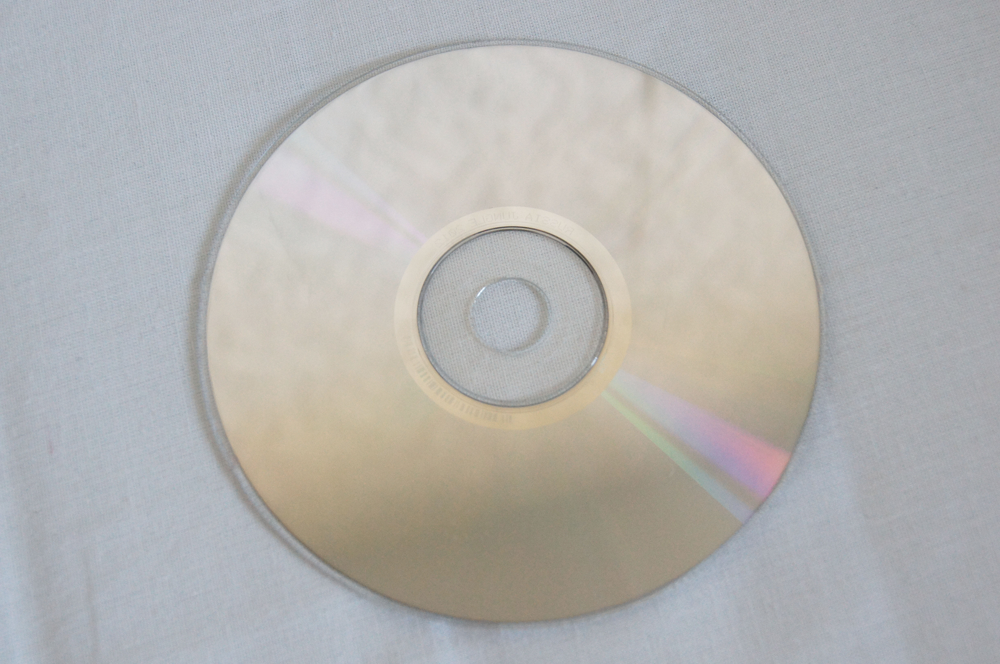

Сегодня у меня выдался выходной день и я решила пересмотреть один из моих любимых фильмов, "Амели". Этот фильм настолько легкий, приятный и жизненный, что смотреть его одно удовольствие. Каждый раз, когда я смотрю этот фильм, я ассоциирую себя с главной героиней. Мне кажется, мы очень похожи. Атмосфера французского кино всегда очень импонирует мне, у нее какая-то особенная аура. Я советую посмотреть этот фильм всем, кто его еще не видел, ведь он обладает особенным даром мотивации и вдохновения.
